泉都別府。
数々の歴史と伝説を持つ大分県屈指のディープ温泉シティ。
そんな別府のとあるお寺の門前で私は呆けているのであった。
何でそんなところに居るかというと、話は前日夜に遡る。
conka※の編集長と別府某所で酒を飲んでいたら八幡地獄の話になった。
別府には数多くの地獄があるが（もちろんこのサイトで取り扱っているようなあんな地獄やこんな地獄ではなくて、いわゆる噴煙吹きまくりの地獄のことだよ）、その中に八幡地獄という地獄があったのだ。
八幡地獄といえば数々の未確認生物のミイラを展示していたという怪物館があった場所として私の脳内倉庫にはインプットされている。
古い絵葉書を見ると、人魚、牛と人間のハーフである件（くだん）、河童のミイラ、さらに鵺（ぬえ）のミイラまで取り揃えた豊富すぎるラインナップだった。ついでに頭から角の生えた鬼の骸骨が外に立っていたというのだからそのキテレツぶりが想像できる。
（ホントはココに載せたいのだが、別府 八幡地獄 怪物館 などで画像検索してみてね）
余談だが大分県下には他にも宇佐市大乗院にある鬼のミイラ、内山観音にある大蛇（龍？）の尻尾の骨、耶馬溪の羅漢寺にある鬼の子などなど…数多くのミイラや骸骨が存在する。それらは様々な動物を繋ぎ合わせた見世物用の「つくりもの」だ。
そんな好奇心を刺激しまくり施設のおかげで八幡地獄は戦前にはメジャークラス観光地だったそうだ。
しかし湯量の減少により閉鎖されてしまったという。
あまりにも浮世離れしたハナシなので都市伝説なのかとさえ思っていたら、なんと八幡地獄の跡地が現存するというのだ！
これは聞き捨てならんぞ。編集長に場所を教えてもらう。
おお、意外と市街から近いじゃないか。
ひょっとしてら怪物館の建物ぐらいは残っているかも。んで、おっ、ドアが開いてるじゃないか…チョット拝見…うわっ！人魚のミイラだぁ〜〜〜！ガサッ！何か踏んだぞ…うひゃぁ〜鬼の骸骨だぁ〜だぁ〜だぁ〜
だぁ〜…
…さん
…じまさん
…小嶋さん、帰りますか〜。
おおお、酔っぱらっていたのか〜俺。
てな訳で翌日。
その八幡地獄の跡地に赴いてみる。
しかし！
いかんせん地獄返上してからかなりの時間が経過していて、現在は単なる公園になっており、その面影すらない。
唯一の名残は入口にあった門柱のみであった。
残念ながら うわっ！で、ガサッ！で、うひゃぁ〜、な展開どころか何も見るものすらない、という塩梅。
てなわけで八幡地獄は見事空振り三振に終わったのだが、その隣にお寺があったのでさして期待もせずに寄ってみることにした。
前説が長くなってしまい恐縮ですが、やっと本題です。
てなわけで八幡地獄を探し歩いている際に発見した霊泉寺。
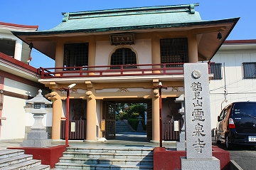
期待はせずにとは言ったものの、比較的立派そうなお寺で、外から見る限り何となく気になる感じ（妖気とでもいうんでしょうか）がして素通り出来ない雰囲気は濃厚であった。
山門を潜り境内に入ると参堂を跨ぐカタチでパイプが横切っている。
恐らく温泉を通しているのだろうが、お寺の参道を温泉が横切るあたりはさすが別府である。
左手に見える長い建物は地蔵尊供養殿という。
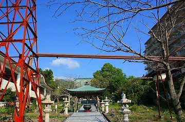 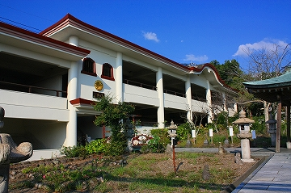
内部はこんな感じ。
大量のお地蔵さんが並んでいる。
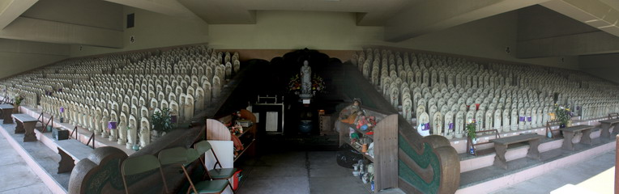
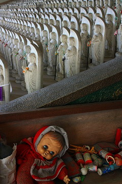 中央の棚には人形や玩具が積まれていた。
退色してやや埃が積もった人形はたまらなく寂しげだ。
2階にも同じスペースがあるが、そちらは空席でした。
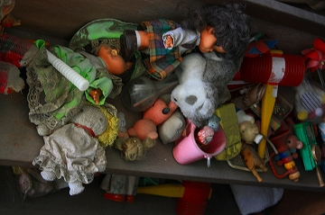
地蔵尊供養殿の側面は何故か岩石風になっており、仏像が置かれている。すぐ下は空池だった。
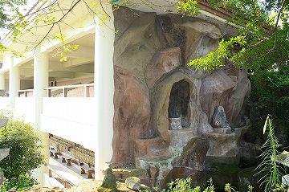
で、本堂。
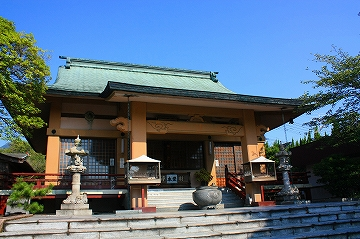
本堂の裏手にまわるとゴボゴボと威勢の良いサウンドが聞こえてくる。おお、見事な温泉だ。
源泉の温度は分からないが、それじゃ入りますか的な温度とは思えない。つか入ったら間違いなくあの世行き。
だって池の傍にいるだけで熱いもの。
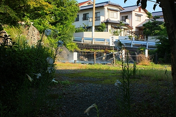 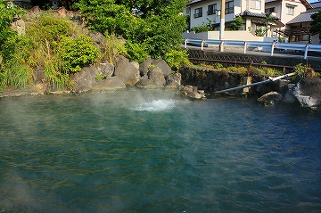
実はこの源泉、鶴見地獄と呼ばれていて戦前は隣の八幡地獄と同様、人気の地獄だったという。
かつては池の中に鬼の人形がいて口から湯煙を吐いていたとか。
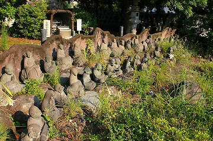 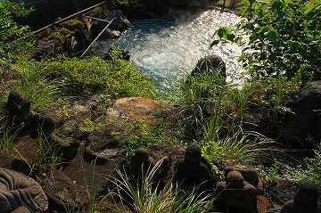
地獄の裏手には石造の五百羅漢像が並び、池を見下ろしている。
さらにその周辺には金色のコンクリ仏や聖観世音菩薩と書かれた金色の台座だけがあったりする。
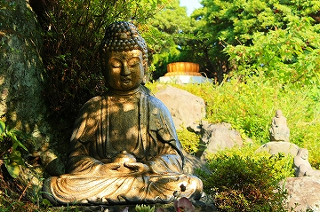 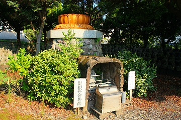
お口から液晶テレビ（37型）を出すという手品に挑戦中の羅漢さん。
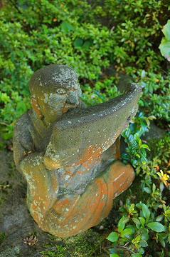
↓は戦前の鶴見地獄の様子。
湯煙の中に鬼の姿が見える。もちろん今は鬼の姿など影もカタチもない。
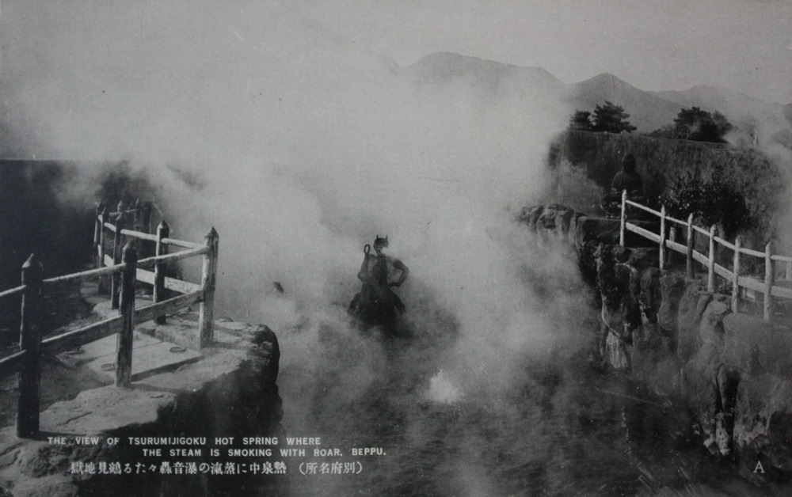
（画像をクリックすると拡大しますので湯煙の中にいる鬼などを御確認くださいな）
当初の目的であった八幡地獄はその形跡さえ見つからなかったが、思わぬところで鶴見地獄というインディーズの地獄を発見出来たので、まあ、良しとしましょうか。
さて。
地獄も堪能したので温泉でも行こうか、と帰ろうとしたら掃除のおばさんがいてここも見ていけ、という。
丁度地蔵尊供養殿の対面にある細長い建物だ。
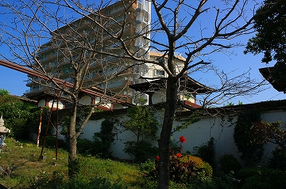
鶴見地獄を見て何となく納得感というか満足感を得ていた私はどっちかというと温泉に浸かったり地獄蒸しプリンを食べたりする方に気持ちがシフトしていたので正直どっちでもいいかな〜と思っていたのだが、おばさんが照明のスイッチを入れてくれたので、半ば仕方なく見に行く事にした。
歓喜天があってその先がこんな感じ。
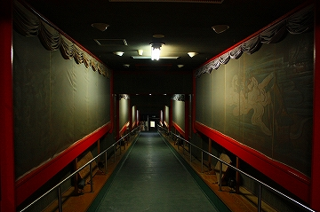
薄暗い回廊状の内部の左右には赤い縁取りがしてある。
そこに何かの絵があるようだが絵の前には何故か網が掛かっていて、斜めからは見えないようになっている。
この時点でピーンと来た。
はは〜ん。いわゆる秘☆宝☆館☆系の展示だな、と。
このビザールな薄暗さ、入口の歓喜天、そしてオバサンの多くを語らぬ目配せ。
間違いない。ぜっっっっっったいにすっっっっっっごい18禁画とかが飾ってあるんでしょ！
…と思ったら普通の仏画でした。
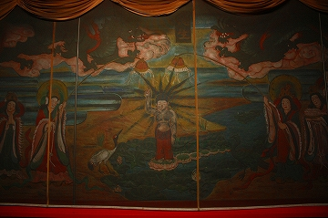 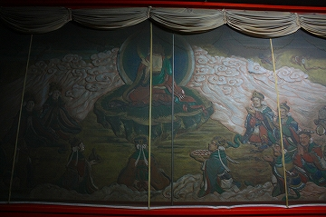
釈迦生誕譚に始まり入滅までのお釈迦さまのライフヒストリーの一大絵巻。
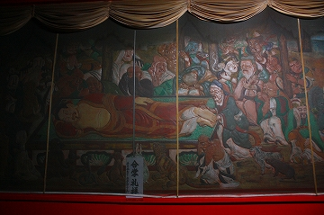 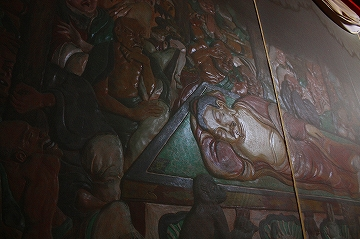
しかし！
逆サイドにはおどろおどろしい地獄のレリーフが延々と続いていた。
地獄だけに地獄をどうぞ、という趣向なのか。
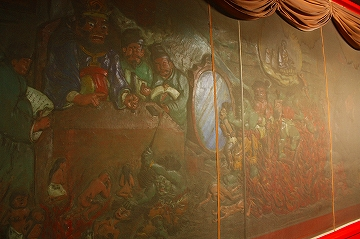 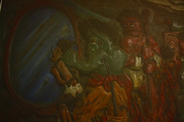
最初は半笑いで眺めていたのだが、残虐さが段々エスカレート。
思わずゴクリ、とする場面も。
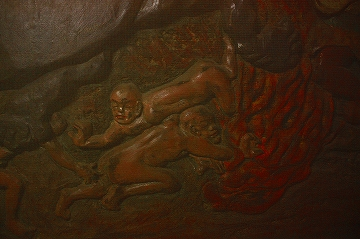 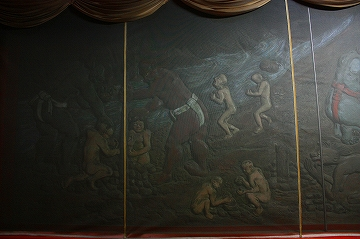
紗がかかったレリーフはどこか秘密めいた雰囲気が漂っていて、見てはいけないものを見ている感じ。
そういう意味で、秘宝館ではなかったが先程の感触は外れてはいなかった、みたい。
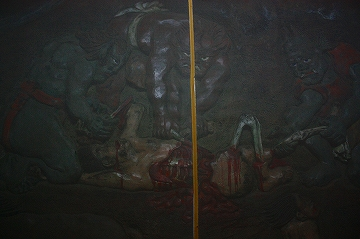 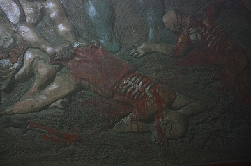
途中黄色いラインが横切るのは網の継ぎ手なので勘弁してね。
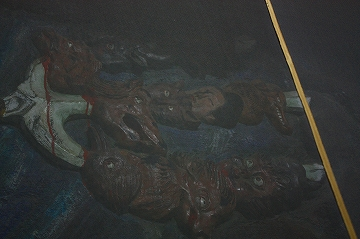 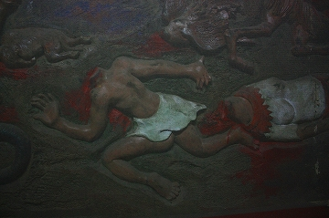
薄暗い紗の向こうに展開される地獄の光景。
先程までの呑気な雰囲気は一掃。地獄蒸しプリンのことなど十万億土のかなたにアウトオブサイトなのである。
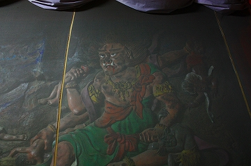
もちろん地獄のお楽しみ鍋と臼は標準装備。
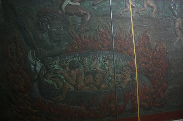 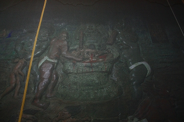
凄惨な場面の連続にじっとりと厭な汗をかくのであった。
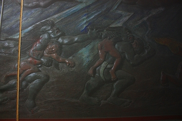
何故か地獄の合間にコマのようなものが奉納されていた。
見れば合格祈願が多かった。
この凄惨な地獄を前にしてオノレの受験の事を語りだす若者の一方的なガッツには敬意を表したい。
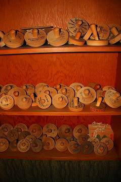
そんなこんなで地獄巡りは終了。
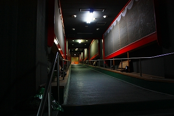
最後のシメは訳の判らない半裸婦像、そして大分県全域のレリーフ。
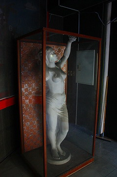 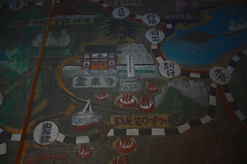
このレリーフを見ると、湯布院のアフリカンサファリがあるので1970年代以降に作られた事がわかる。
にしてもこのレリーフだけ見たら霊泉寺って別府で最大のみどころっぽいじゃないすか。
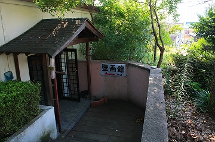
で、外に出ると、壁画館とあった。結果出口から入口に進んでたみたい。
で、今歩いてきた絵画館を見てみるとこんな感じ。不思議な建物である。
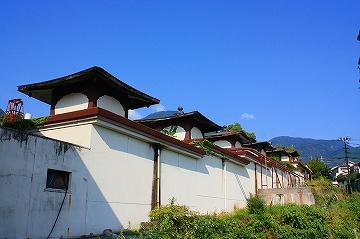
結局、地獄を探して来てみたらもっと凄いリアル地獄を見つけてしまいました、つー事で…
※ conka…大分のタウン誌。とりわけ「おおいたカルト百選」というコーナーは大傑作です。
2008.08.
珍寺大道場 HOME